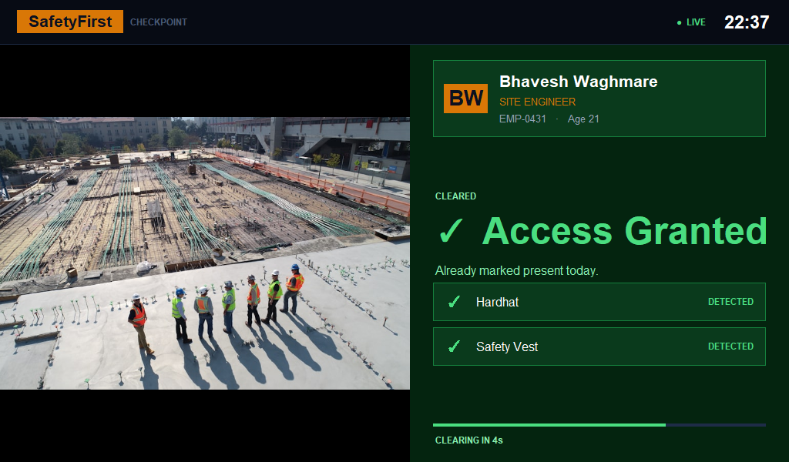
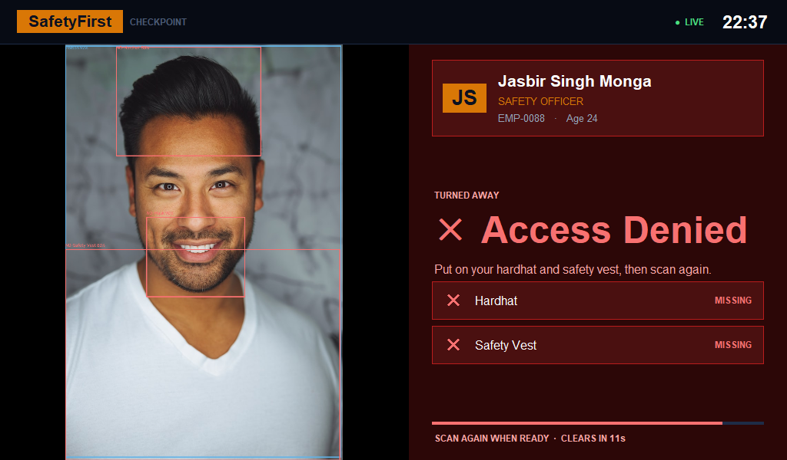

Gate Control
The checkpoint itself — camera, badge, ruling.
- Frame-by-frame verification
- Named worker on screen
- Spoken alert on refusal
A worker arrives at the gate. Before they step onto the site, a camera confirms they are wearing what the job requires — and the gate answers in about a second.

No new habits to learn, no forms, nothing to remember. A worker does what they already do: turn up.
A card touch identifies who is at the gate. The screen greets them by name — not an ID number.
A vision model checks for a hardhat and a high-visibility vest, and holds the answer for a moment to be sure.
Cleared, and they are marked present. Missing something, and the screen names it so they can fix it and scan again.

These are real screens, not mock-ups — the detection boxes and the ruling come from the model itself.


A refusal that just says “no” teaches nobody anything. This one names the missing item, in plain words, at a size readable from across the gate — then clears itself so the queue keeps moving.
Every decision is written down against a name, so a supervisor asked what controls were in place has an answer made of records rather than recollection.

Sites rarely fail because nobody issued a helmet. They fail in the moments between issuing it and wearing it — moments no supervisor can stand and watch all day.
of construction deaths come from falls, struck-by, caught-in and electrocution.
running as the most-cited violation: fall protection. Non-compliance is not rare.
deaths per 1,000 miners in India — down from 0.93, and still counted in lives.
Manual inspection is labour-intensive, time-consuming and susceptible to human error — and the hardest thing of all to catch is the worker who takes the helmet off once they are past the gate.Paraphrased from published research on vision-based safety compliance
The gate makes the call. Everyone else sees the part that concerns them.
The checkpoint itself — camera, badge, ruling.
What a supervisor opens on a Monday morning.
What each person can see about themselves.
The BOCW Act, the Factories Act and the Occupational Safety Code already oblige an employer to supply protective equipment free of cost. Helmet, safety shoes and reflective jacket are the baseline on an Indian site, and the equipment must be ISI-certified to BIS standards.
Nothing here invents a policy. It verifies an existing one at the only moment that matters — the moment somebody walks in.

The decision already works. What follows is wiring it to something physical.
Built for FAR AWAY 2026 — Agentic & Autonomous Systems.
No signup needed. Point a camera at yourself and watch the checkpoint decide whether you would be let through.